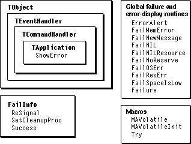

Failure-Handling Overview
MacApp provides a failure-handling mechanism that allows your application to clean up after errors. This mechanism is described in detail in "Failure Handling," beginning on page 54. Your application can install failure handlers at multiple points. MacApp links the failure handlers together in a linked list, shown in Figure 3-2. You install a failure handler in the list with theTrymacro, as shown in the following code fragment:// Declare a failure handler. FailInfo fi; // Link the failure handler to the global list. Try(fi) { // Code that may cause a failure. . . . // If no failure occurs, remove the failure handler from the list. fi.Success(); } else { // Code to recover if an error occurs. . . . // In this case, pass error on to next handler. fi.ReSignal(); }TheTryblock of code is executed first.Tryis implemented as a macro rather than as a method of theFailInfoclass, because the failure-handling code must be inline to properly save the current machine state. TheTrymacro links the failure handler to the list of failure handlers and callssetjmpto save the current machine state in the failure handler's buffer.Note that the call to
- If an error occurs, the failure handler is invoked and causes execution to continue with the
elseblock of code--otherwise, theelseblock is never executed. Optionally, the failure handler may call a specific cleanup routine.- If no error occurs, the call to
Successremoves the failure handler from the list.ReSignal, which invokes the next failure handler in the list, is not always necessary--the error code from the first handler may handle the error condition completely.ReSignalis a convenience routine that just callsFailure, passing the same message and error number values from the previous call. TheFailureroutine is described beginning on page 563.Figure 24-2 shows the classes, methods, and routines used by MacApp and your application to handle failures and display error messages.
Figure 24-2 Failure-handling and error-message classes, methods, and routines

MacApp Error-Checking Routines
MacApp supplies the following global routines to check for common error conditions:You can read more about these error-checking routines in the MacApp Class and Method Reference. The temporary and low-space reserves are described in "Dynamic Memory Allocation," beginning on page 62.
FailMemError- The
FailMemErrorroutine calls the Toolbox routineMemErrorto check whether the last memory operation caused an error. You callFailMemErrorafter making a Toolbox call that affects memory, such asSetPtrSizeorSetHandleSize.FailNIL- The
FailNILroutine tests whether the passedvoid *value isNULL. The most common value passed toFailNILis a newly created object reference, pointer, or handle.FailNILfails withmemFullErras the error message. This results in an error message of "Unable to <x> because there is not enough memory." <x> is a string that describes the current operation, such as "open a new document".FailNILResource- The
FailNILResourceroutine checks whether the handle returned by a Resource Manager call isNULL. You passFailNILResourcethe handle returned by a Resource Manager call such asGetResource.FailNonObject- The
FailNonObjectroutine attempts to determine whether the passed pointer references an object, and generates a failure if it doesn't. The checking is more robust when the application is built with MacApp's debugging support.- You use
FailNonObjectto check whether an object pointer is valid when you really expect it to be valid. If the value passed isNULLor does not point to something that looks like an object,FailNonObjectfails withminErras the error message: "Unable to <x> because there is not enough memory."FailNoReserve- The
FailNoReserveroutine checks whether the application's temporary reserve is low. CallingFailNoReservecauses MacApp to rebuild its memory reserves, so use it sparingly, such as when you must be sure that some reserve space is available.FailOSErr- The
FailOSErrroutine tests whether the passedOSErrvalue is not equal tonoErr. The most common value passed toFailOSErris the result of a Toolbox call, such asFSWrite.FailResError- The
FailResErrorroutine calls the Toolbox routineResErrorto check whether there was an error caused by the last resource operation. You callFailResErrorafter making a Resource Manager call that does not return a handle to the resource.FailSpaceIsLow- The
FailSpaceIsLowroutine checks whether the low-space reserve is missing.FailSpaceIsLowcauses MacApp to rebuild its memory reserves, so it should not be called indiscriminately.You call an error-checking routine with code like the following:
fDataHandle = (Handle)GetPixPat(fRsrcID); FailNILResource(fDataHandle);This code calls the Toolbox routine GetPixPat to get a'ppat'resource. It then calls FailNILResource to determine whether the call succeeded and to generate a failure and display an error message if it did not.The Failure Routine
When an error-checking routine is called but no error occurs, it simply returns. When an error does occur, the error-checking routine calls MacApp'sFailureroutine to process the error. The interface toFailureis defined as follows:void Failure(OSErr error, long message)The parameters toFailureare discussed in the following section. TheFailureroutine starts the process of handling an error by retrieving the most recent failure handler from the linked list and restoring the machine state stored by the handler. Routines called after the handler was initialized are skipped, and execution continues in the failure handler's error-recovery code branch. The error-recovery code performs its cleanup, then optionally callsReSignalto invoke the next failure handler to continue the process.The next section describes MacApp's mechanism for displaying failure-related errors.
How Error Messages Are Displayed
If each failure handler calls ReSignal to invoke the next failure handler in the list, the handler installed by the application object'sPollEventmethod is eventually reached. Its error-recovery code calls the application'sShowErrormethod, passing the same error and message parameters that were passed to theFailureroutine.ShowErrorpasses these parameters on to theErrorAlertroutine to display an alert box.MacApp supplies several
'ALRT'resources to display error message strings to the user. These resources each have placeholders, denoted as ^0, ^1, and ^2. The MacApp constants for these alert resources, and the message strings they contain, are as follows:The placeholder ^2 is called the operation (the command or operation that caused the error), ^0 is called the reason (why the operation could not be completed), and ^1 is called the recovery (what the user can do to recover from the error).
phGenError- Could not ^2, because ^0. ^1.
phCommandError- Could not complete the ^2 command because ^0. ^1.
phUnknownErr- Could not complete your request because ^0. ^1.
The
ErrorAlertroutine chooses an alert resource and fills in the placeholders based on theerrorandmessagevalues passed to it.ErrorAlertuses the Toolbox routineParamTextto set the alert text. The placeholders are filled in as follows:
- ^0:
ErrorAlertuses theerrorparameter passed toFailureto look up a string that describes the kind of error that occurred.- ^1: Depending on the
errorparameter passed toFailure, it may or may not be appropriate to use the ^1 placeholder. When appropriate,ErrorAlertuses theerrorparameter to specify a string that suggests a recovery strategy.- ^2:
ErrorAlerttreats themessageparameter, a long integer, as a pair of numbers. The high word ofmessagedetermines how the low word is interpreted. There are five possibilities:
- high word =
messageCommandErrorThe low word is the command number.ErrorAlerttranslates that command number into a command name and substitutes it for ^2. ThephCommandErroralert is used.- high word =
messageAlertThe low word is an alert number (that is, a resource number). This is generally an alert that you have defined. That alert is displayed. In this case,ErrorAlertdoes not callParamText, and does nothing to set replacement text for the placeholders.- high word =
messageLookupThe low word is a positive integer index into a message table in the resource file.ErrorAlertretrieves a string to replace ^2 that describes the operation.- high word = none of above
The high word is a resource ID for a string list, and the low word is an index into that list.ErrorAlertsubstitutes the specified string for ^2.ErrorAlertuses thephGenErroralert.- message = 0
ErrorAlertuses thephUnknownErralert.
- Note
- Placeholders are convenient for English language applications, but it is easier to internationalize (or localize) applications that use only complete error strings.
Setting the Error Message in a Failure Handler
After you have dealt with an error in your failure-handling code, you can either return normally by doing nothing or propagate the error by callingReSignal. TheFailInfo::ReSignal method just callsFailureto execute the next failure handler in the list, passing the sameerrorandmessagevalues that were passed to your failure handler.If the message parameter was already set to a nonzero value, you don't usually want to change it in your failure handler. A failure handler should generally assume that the routine that called
Failurehas more specific knowledge about the error, so the values it supplied forerrorandmessageare the most appropriate values.To set the
messagevalue only if it hasn't been set already, you can call theFailNewMessageglobal routine instead of callingReSignal. TheFailNewMessageroutine has three parameters:error,oldMessage, andnewMessage. You pass theerrorvalue, the previousmessagevalue, and anewMessagevalue to use if the previous value is 0.FailNewMessagecallsFailure, passing the old message if it isn't 0, and otherwise the new message.Calling the Failure Routine Directly
Instead of calling one of the error-checking routines supplied by MacApp, your application can check for errors itself, then call MacApp'sFailureroutine if it detects an error. When you callFailuredirectly, you supply error and message parameters as described in "How Error Messages Are Displayed," beginning on page 564. You can either passerrorandmessagevalues that are defined by MacApp, or you can define your own special messages. The following example shows how to fail with a program error instead of an out-of-memory error:fDataHandle = YourGetDataHandleRoutine(); // Returns a data handle. if (fDataHandle == NULL) Failure(minErr, 0);In this code fragment, you expect to get the YourGetDataHandleRoutine routine to return a handle. If you callFailNILon the returned value and the value is NULL, the error message would be "Unable to <x> because there is not enough memory." By callingFailuredirectly and passingminErras the error value, the error message becomes "Unable to <x> because of a program error."
- Note
- When you call
Failuredirectly, you can effectively create a "silent failure" (no message is displayed) with a call like the following: Failure(noErr, 0);// Silent failure. uYou can also override the
Failure(noErr, 0);// Silent failure. uYou can also override theShowErrormethod in your application class to change the way error alerts are displayed.